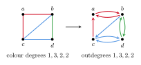
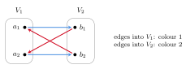
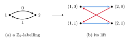
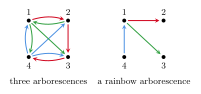
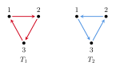

6 Edge-coloured digraphs
A digraph may have two edges between a pair of vertices, but then their directions are opposite. We write $xy$ for the edge from $x$ to $y$. Unless stated otherwise, paths and cycles in digraphs are directed, that is, their edges are oriented consistently. A colouring of a digraph is proper if no two edges with a common initial vertex, and no two edges with a common final vertex, have the same colour. The complete digraph on $n$ vertices has both edges $xy$ and $yx$ for every pair $x\neq y$. As in Section 2.1, a Latin square of order $n$ is the same as a proper colouring of the complete digraph with a loop at each vertex, using $n$ colours, and a transversal is a rainbow $1$-factor (Figure 1d).
Directions add a second constraint to every question of the previous chapters. A rainbow path must now also follow the orientation. Both constraints are used in the translations below: a Latin square becomes a coloured complete digraph, a fair-division instance becomes a multipartite digraph, and an arborescence becomes a common basis of two matroids.
6.1 Long rainbow paths and cycles in complete digraphs
Hahn's question from Section 4.1 has a directed version: does every properly coloured complete digraph contain a rainbow Hamilton path? The Maamoun–Meyniel colouring of $K_{2^k}$ answers it negatively. Replace each edge $uv$ of colour $f$ by the two edges $uv$ and $vu$, both of colour $f$. The resulting proper colouring of the complete digraph has no rainbow Hamilton path, even if the directions are ignored [51].
For Latin squares the directed question is a question about transversals. Gyárfás and Sárközy conjectured in 2014 that every Latin square of order $n$ has a partial transversal with $n-2$ cells which is cycle-free, that is, whose edges in the complete digraph with loops contain no cycle. Such a transversal is a rainbow union of at most two paths. Bowtell, Montgomery, Müyesser and Pokrovskiy proved a stronger statement.
There is $n_0$ such that, for $n\geq n_0$, every proper colouring of the complete digraph with loops on $n$ vertices using $n$ colours contains a rainbow path on $n-1$ vertices.
A loop cannot lie on a path, so the theorem concerns the complete digraph without loops, coloured from a Latin square. It is the directed counterpart of Theorem 4.2, and the cyclic Latin squares of even order show that a rainbow Hamilton cycle need not exist. For almost all Latin squares more is true. Gould and Kelly [142] showed that, as $n\to\infty$, almost all Latin squares of order $n$ have a Hamilton transversal, that is, a rainbow Hamilton cycle in the complete digraph with loops.
The theorem of Bowtell, Montgomery, Müyesser and Pokrovskiy covers more than Latin squares. Their methods apply to every properly coloured digraph whose vertices have in- and outdegree $(1\pm\varepsilon)n$ and whose colours are each used $(1\pm\varepsilon)n$ times, for $\varepsilon$ sufficiently small in terms of $1/\log n$. With at least $n$ colours, such a digraph contains a rainbow Hamilton path and a rainbow cycle through all but $100$ vertices [63, Theorem 4.1]. For an arbitrary proper colouring of the complete digraph, where colour classes may be small, the best result is weaker.
Every properly coloured complete digraph on $n$ vertices contains a rainbow cycle of length $n-O(n^{4/5})$, and a rainbow union of vertex-disjoint paths with $n-O(n^{2/3})$ edges.
The difference between the two theorems is in the colourings, not in the host. When each colour class is close to a $1$-factor, the error is a constant; when colour classes can have any size up to $n$, only a polynomial error is known. In undirected complete graphs there is no such gap: every proper colouring of $K_n$ contains a rainbow cycle through all but a constant number of vertices [63, Theorem 1.3]. Benzing, Pokrovskiy and Sudakov asked how far their error terms can be reduced. The natural target is a rainbow cycle of length $n-O(1)$ in every properly coloured complete digraph, which would make the result independent of the sizes of the colour classes.
Theorem 6.1 gives a rainbow path with $n-2$ edges. Gould and Kelly [142] conjectured that one more edge is always possible if a cycle is also allowed.
Every proper colouring of the complete digraph with loops on $n$ vertices contains a rainbow path or a rainbow cycle with at least $n-1$ edges.
For a Latin square, such a path or cycle is a partial transversal with $n-1$ cells whose edges form a connected digraph. Gould and Kelly note that, for every $n$, the conjecture would imply the Ryser–Brualdi–Stein bound $n-1$, Andersen's conjecture and the Gyárfás–Sárközy conjecture. It allows any number of colours. Colour the loops of the doubled Maamoun–Meyniel colouring with new colours. There is still no rainbow Hamilton path, so here the conjecture asks for a rainbow cycle with at least $n-1$ edges.
Benzing, Pokrovskiy and Sudakov [51] also suggested looking for long rainbow paths and cycles in properly coloured tournaments, for example regular ones. Hamilton cycles in regular tournaments have been studied extensively, but their rainbow versions have not.
The $d$-regular analogue, where the host is any $d$-regular digraph with one incoming and one outgoing edge of each colour at every vertex, is the directed Schrijver problem of Section 4.2.
6.2 Colour degree and outdegree
The colour degree of an edge-coloured graph (Section 5.6) and the outdegree of a digraph are closely related. Czygrinow, Molla, Nagle and Oursler [102] describe two translations.
From a coloured graph to a digraph: at each vertex $v$, choose one edge of each colour at $v$ and orient it away from $v$. The outdegree of $v$ in the resulting digraph is exactly its colour degree (Figure 25). The digraph may contain both $vw$ and $wv$.
From a digraph to a coloured graph: give the edge $vw$ the colour $w$, that is, colour every edge by its final vertex. The edges leaving $v$ then have distinct colours, so the colour degree of $v$ is at least its outdegree. A cycle $v_1v_2\dots v_\ell v_1$ becomes a rainbow cycle, since its colours $v_2,\dots,v_\ell,v_1$ are distinct. Section 4.3 used the same idea, with colours given by initial vertices, to derive the Caccetta–Häggkvist conjecture from Aharoni's conjecture.

The second translation shows that a colour-degree condition forcing rainbow cycles of length $\ell$ would force cycles of length $\ell$ in oriented graphs, that is, in digraphs without $2$-cycles. The thresholds in the two settings are close, but not equal. Li [193] proved that colour degree $(n+1)/2$ forces a rainbow triangle (Section 4.5). For longer even cycles the threshold falls to about $n/3$.
Let $\ell\geq4$ be fixed and let $n$ be sufficiently large. If $\ell$ is even, every edge-coloured graph on $n$ vertices with minimum colour degree at least $(n+5)/3$ contains a rainbow cycle of length $\ell$. For every $\ell$, every oriented graph on $n$ vertices with minimum outdegree at least $(n+1)/3$ contains a cycle of length $\ell$.
Both bounds are best possible when $\ell$ is not divisible by $3$. For oriented graphs, take a blow-up of a cycle of length $3$, with parts $V_0,V_1,V_2$ and all edges from $V_i$ to $V_{i+1}$. Every cycle winds around the parts, so its length is divisible by $3$. The oriented result is the outdegree version of a theorem of Kelly, Kühn and Osthus, who proved the same bound for the minimum semidegree.
The first translation is the starting point for Lo and Williams [201] in their work on tilings by rainbow triangles (Section 5.6). They first pass to a minimal subgraph with the same colour degrees, in which every colour class is a union of vertex-disjoint stars, and orient each star towards its centre. In the resulting digraph the edges leaving a vertex have distinct colours, and the outdegree is close to the colour degree. This turns their problem into a tiling problem in a digraph.
The constructions behind Theorem 6.4 only exclude cycles whose length is not divisible by $3$. For even $\ell$ divisible by $3$, Czygrinow, Molla, Nagle and Oursler show that colour degree $(1/3-\alpha)n$ already suffices for some absolute $\alpha>0$, so the threshold is lower. They do not determine its value, and their outdegree bound for oriented graphs is likewise sharp only when $3\nmid\ell$. For $\ell=3$ the oriented question is the triangle case of the Caccetta–Häggkvist conjecture (Section 4.3).
6.3 Rainbow cycles and envy-free allocations
Rainbow cycles in multipartite digraphs appear in fair division. Suppose that indivisible goods are to be split among $n$ agents, each of whom values a set of goods by the sum of the values of its elements. An allocation is envy-free up to any good, or EFX, if no agent prefers another agent's bundle after any single good is removed from that bundle. Whether an EFX allocation of all goods always exists is a central open problem of discrete fair division. It is known for three agents, but open for four or more.
One relaxation allows some goods to stay unallocated and asks for an allocation in which every agent values its own bundle at least $1-\varepsilon$ times the value of any other bundle with one good removed. The aim is to leave few goods unallocated. Chaudhury, Garg, Mehlhorn, Mehta and Misra [82] reduced this to a problem about digraphs. For a positive integer $d$, the rainbow cycle number $R(d)$ is the largest $k$ for which there is a $k$-partite digraph with parts $V_1,\dots,V_k$ of size at most $d$ with two properties. Every vertex has an inneighbour in every other part, but no cycle contains at most one vertex from each part. Colour each edge by the part containing its final vertex. A cycle then uses at most one vertex of each part exactly when its colours are distinct, so the second property says that there is no rainbow cycle (Figure 26). An upper bound on $R(d)$ gives an allocation with fewer unallocated goods.

Chaudhury, Garg, Mehlhorn, Mehta and Misra proved $d\leq R(d)\leq d^4+d$. Berendsohn, Boyadzhiyska and Kozma [52] improved this to $d^{2+o(1)}$, and Akrami, Alon, Chaudhury, Garg, Mehlhorn and Mehta [18] and, independently, Chashm Jahan, Seddighin, Seyed-Javadi and Sharifi [162] to $O(d\log d)$. Sivashankar showed that $R(d)$ is linear.
For every positive integer $d$, we have $R(d)<ed$.
Through the reduction, every instance with $n$ agents has an allocation that is $(1-\varepsilon)$-EFX in the above sense and leaves $O(\sqrt{n/\varepsilon})$ goods unallocated. This is the best guarantee that the reduction can give. The reduction runs in one direction only: full EFX asks for every good to be allocated with $\varepsilon=0$, and a bound on $R(d)$ does not give that. The exact value of $R(d)$ remains a combinatorial question in its own right.
Is $R(d)=d$ for every positive integer $d$?
This is known for $d\leq3$ [52], and the case $d=4$ was verified with a SAT solver (see [251]). Theorem 6.5 leaves a constant factor between $d$ and $ed$.
The rainbow cycle number also contains a zero-sum problem. For a finite group $\Gamma$, let $n(\Gamma)$ be the least $n$ such that every labelling of the edges of the complete digraph on $n$ vertices by elements of $\Gamma$ has a cycle whose labels multiply, in order, to the identity. Berendsohn, Boyadzhiyska and Kozma [52] observed that this is a special case of the rainbow cycle problem. Take one part $V_i=\{i\}\times\Gamma$ for each vertex $i$. If the edge $ij$ has label $a_{ij}$, join $(i,x)$ to $(j,xa_{ij})$ for every $x\in\Gamma$. Every vertex of $V_j$ then has exactly one inneighbour in $V_i$. A rainbow cycle through $(i_1,x)$ returns to $x$ only if $x=xa_{i_1i_2}\cdots a_{i_ri_1}$, so rainbow cycles in the lift are exactly lifts of zero-sum cycles (Figure 27). Hence $n(\Gamma)\leq R(|\Gamma|)+1$, and Theorem 6.5 gives $n(\Gamma)<e|\Gamma|+1$ [251].

In the lift every pair of parts is joined by a permutation. Restricting to such digraphs defines the permutation rainbow cycle number $R_p(d)\leq R(d)$, for which Berendsohn, Boyadzhiyska and Kozma and, independently, Akrami et al. proved $R_p(d)\leq2d-2$. Chashm Jahan et al. improved this to $2d-4$ for $d\geq4$ [162]. The cyclic group gives $n(\mathbb{Z}_q)\geq q+1$, so a positive answer to Problem 6.6 would give the sharp bound $n(\Gamma)\leq|\Gamma|+1$ for every finite group. According to Sivashankar [251], Campbell et al. have announced this bound and proved it for groups of odd order. The converse fails: a bound on $n(\Gamma)$ says nothing about lifts whose maps between parts are not translations, so Problem 6.6 would remain open even after the zero-sum problem is settled.
6.4 Rainbow arborescences
An arborescence, or outbranching, is a spanning tree of a digraph in which every vertex except one, the root, has exactly one incoming edge. As explained in Section 3.6, the arborescences of a digraph are the common bases of two matroids. Aharoni, Kotlar and Ziv conjectured that $n$ disjoint common bases of two matroids of rank $n$ have a rainbow common independent set of size $n-1$, and this cannot be raised to $n$ in general. Bérczi, Király, Yamaguchi and Yokoi [74] observed that no counterexample of size $n$ is known for arborescences, and conjectured that none exists.
If the edges of a digraph on $n$ vertices are coloured with $n-1$ colours so that each colour class is a spanning arborescence, then there is a spanning arborescence with exactly one edge of each colour.
Figure 28 shows an example on four vertices. The colour classes may have different roots, and the conjecture does not prescribe the root of the rainbow arborescence. With a prescribed root, deciding whether a rainbow arborescence exists is NP-complete, even when the colour classes have only two distinct roots [74].

Bérczi, Király, Yamaguchi and Yokoi proved the conjecture in several cases. The hardest is when the underlying graph is a cycle [75]. The conjecture also holds when each colour class is a path or a star, when at most two vertices are roots of more than one colour class, and when all colour classes are orientations of one tree. A computer search confirms it for $n\leq8$. In the other direction, they relaxed the conclusion. Given $2n-4$ colour classes instead of $n-1$, there is a rainbow spanning arborescence. From $n-1$ colour classes one can always find a rainbow arborescence, not necessarily spanning, with $\lfloor n/2\rfloor$ edges. Closing either gap, to $n-1$ colour classes or to $n-1$ edges, is the conjecture itself.
Bérczi, Király, Yamaguchi and Yokoi [74] suggest two further steps. The first strengthens the $\lfloor n/2\rfloor$ bound in the spirit of a recent theorem of Berger and McGinnis. If $A_1,\dots,A_{n-1}$ are arborescences on $n$ vertices, not necessarily spanning, with $|A_i|\geq\min\{i,\lfloor n/2\rfloor\}$ edges, is there always a rainbow arborescence with $\lfloor n/2\rfloor$ edges? The second weakens the conclusion of Conjecture 6.7 from rainbow to properly coloured. Given $n-1$ spanning arborescences on $n$ vertices, does their union contain a spanning arborescence in which the edges leaving each vertex have distinct colours? More strongly, can all edges at each vertex, both entering and leaving, be made to have distinct colours? Each colour may then be used many times, so both questions are weaker than the conjecture.
Random colourings behave as for undirected spanning trees (Theorem 3.22). Bal, Bennett, Cooper, Frieze and Prałat [40] considered the random digraph process, with each edge coloured uniformly from $n(1+o(1))$ colours. Two conditions are necessary for a rainbow arborescence: at most one vertex has indegree $0$, and at least $n-1$ colours have appeared. They showed that with high probability a rainbow arborescence appears as soon as both hold.
6.5 Tournament and digraph collections
Collections of digraphs are defined as for graphs (Section 3.7): a digraph $H$ with $m$ edges is a transversal of $(D_1,\dots,D_m)$ if its edges can be matched bijectively to the $D_i$ so that each edge lies in its digraph.
Every tournament has a Hamilton path. For collections of tournaments this fails for $n=3$: two oppositely oriented cycles of length $3$ have no transversal Hamilton path (Figure 29). Chakraborti, Kim, Lee and Seo [79] showed that small cases are the only exceptions.

For every sufficiently large $n$, every collection of $n-1$ tournaments on a common set of $n$ vertices contains a transversal Hamilton path. Every collection of $n$ tournaments on $n$ vertices, all but at most one of which are strongly connected, contains a transversal Hamilton cycle.
The second statement is sharp: for every $n\geq3$, a collection of $n$ tournaments in which all but two are strongly connected need not have a transversal Hamilton cycle. Thomason proved that every large tournament contains every orientation of a Hamilton path, and every orientation of a Hamilton cycle except possibly the consistently oriented one. Chakraborti, Kim, Lee and Seo [80] proved the transversal version of this as well.
For general digraphs, the minimum semidegree $\delta^0(D)=\min\{\delta^+(D),\delta^-(D)\}$ plays the role of the minimum degree. Ghouila-Houri proved that every digraph on $n$ vertices with $\delta^0(D)\geq n/2$ has a Hamilton cycle. Chakraborti, Kim, Lee and Seo asked for a transversal version, and Cheng, Li, Sun and Wang proved it.
For every sufficiently large $n$, every collection of $n$ digraphs on a common set of $n$ vertices, each with minimum semidegree at least $n/2$, contains a transversal Hamilton cycle.
Replacing each edge of a graph by two opposite edges turns a graph of minimum degree $n/2$ into a digraph of minimum semidegree $n/2$. So Theorem 6.9 contains the transversal Dirac theorem of Joos and Kim (Section 5.5) for large $n$, and Hamilton cycles in digraphs are colour-blind.
The second statement of Theorem 6.8 needs all but one of the tournaments to be strongly connected. Chakraborti, Kim, Lee and Seo suggest a weaker condition. Call a collection of tournaments strongly rainbow-connected if for every two vertices $x,y$ there is a transversal path from $x$ to $y$. A collection with a transversal Hamilton cycle has this property. The converse fails for $n=3$: take two copies of a cycle of length $3$ and one copy of the opposite cycle. Every ordered pair of vertices is joined by an edge of some tournament, but a transversal Hamilton cycle would need three edges of the same orientation from three different tournaments [79].
For all sufficiently large $n$, every strongly rainbow-connected collection of $n$ tournaments on a common set of $n$ vertices contains a transversal Hamilton cycle.
They also ask whether the assumptions of Theorem 6.8 give transversal cycles of every length from $3$ to $n$.
For digraphs, the next targets are oriented graphs and other orientations of the Hamilton cycle. Keevash, Kühn and Osthus showed that an oriented graph on $n$ vertices with minimum semidegree at least $\lceil(3n-4)/8\rceil$ has a Hamilton cycle, and that this is best possible (see [86]).
Let $D_1,\dots,D_n$ be oriented graphs on a common set of $n$ vertices, each with minimum semidegree at least $\lceil(3n-4)/8\rceil$. Must the collection contain a transversal Hamilton cycle?
The absorbing structures behind Theorem 6.9 need semidegree about $n/2$, and Cheng, Li, Sun and Wang expect that new ideas are needed at $3n/8$. They also ask for transversal versions of the results of DeBiasio, Kühn, Molla, Osthus and Taylor and of DeBiasio and Molla, which give every orientation of a Hamilton cycle at minimum semidegree about $n/2$.
6.6 Randomly perturbed digraphs
As for trees (Section 3.8), adding a sparse random digraph to a dense digraph gives rainbow spanning structures with an exact palette. Let $D_0$ be a digraph on $n$ vertices with $\delta^0(D_0)\geq\alpha n$, and add the random digraph $D(n,C/n)$, in which each of the $n(n-1)$ possible edges is present independently with probability $C/n$. Araujo, Balogh, Krueger, Piga and Treglown showed that the union contains every orientation of every cycle of length between $2$ and $n$, simultaneously, with high probability (see [186]). Krueger and Staudinger proved the rainbow version with exactly $n$ colours.
For every $\alpha>0$ there is $C>0$ such that the following holds. Let $D_0$ be a digraph on $n$ vertices with $\delta^0(D_0)\geq\alpha n$. If $D_0\cup D(n,C/n)$ is coloured uniformly from $[n]$, then with high probability it contains a rainbow copy of every orientation of every cycle of length between $2$ and $n$, simultaneously.
The consistently oriented Hamilton cycle was found earlier by Katsamaktsis, Letzter and Sgueglia [170], who asked for every orientation and for universality; Theorem 6.12 answers both. A rainbow Hamilton cycle needs $n$ colours, so the palette is optimal, and the edge probability $C/n$ is optimal up to the constant even without colours. The proof uses Montgomery's distributive absorption.